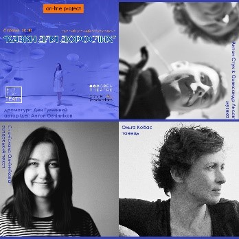
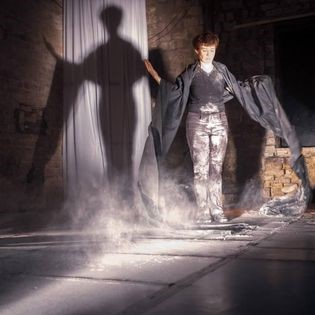
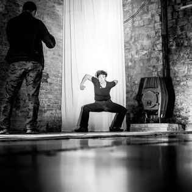
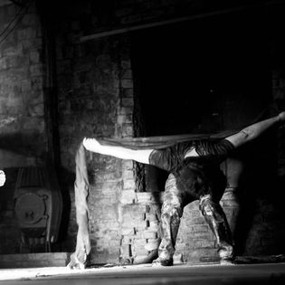
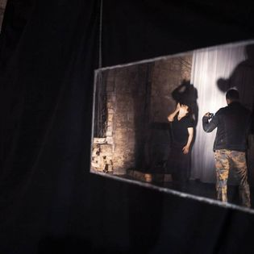
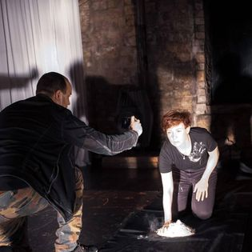
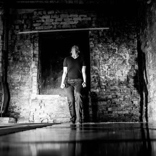

World History: Paradise Pleasure (Kijów, Ukraina 2020)
Performance audiowizualny

Autor pomysłu i kurator projektu: Anton Ovchinnikov
Performerka: Olha Kebas
Aktorka: Stanislava Ovchinnikova
Muzyka: Anton Sztuk i Ołeksandr Łysak
Tekst: Dan Humenny
Transmisja i wsparcie techniczne projektu - OpenTheatre
Performerka: Olha Kebas
Aktorka: Stanislava Ovchinnikova
Muzyka: Anton Sztuk i Ołeksandr Łysak
Tekst: Dan Humenny
Transmisja i wsparcie techniczne projektu - OpenTheatre
Jest to próba performatywnej eksploracji utopii-dystopii lat 90.,
oparta na jaskrawych hasłach reklamowych i sloganach tamtych czasów.
W drodze od dystopii Apple'a (1984) do utopii splotu pomiędzy samochodami Renault "Kto powiedział,
że niebo na ziemi jest niemożliwe?"
Performance odbył się w ramach projektu „Bajki dla dorosłych”.
To projekt performatywny, w którym widz - podczas transmisji internetowej - staje się świadkiem
powstania spektaklu teatru fizycznego.





